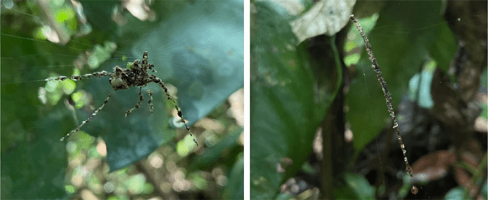

These spiders put on a show for their foes: Arachinids from Peru and the Philippines were observed spinning together surprisingly realistic decoys from detritus, silk, and prey carcasses. These objects resemble larger spiders and might fool predators like lizards and birds, according to a recent paper published in the journal Ecology and Evolution.
The clever trick was observed among two small spider species in the Cyclosa genus, including one from the Philippines that was described for the first time but has not yet been specifically identified. Cyclosa species are orb-weaving spiders, the world’s most common type of spider. These creatures construct round, “more or less symmetrical webs” in the open air. To protect themselves, many orb-weaving spiders that are active in the day “build a silken retreat to hide from predators,” but some assemble web decorations called stabilimenta, according to the paper. Both tactics are rarely observed in the same species. And most Cyclosa stabilimenta seen by scientists have a simple linear shape, rather than this more elaborate doppelgänger appearance.

WILD WEBS: On the left, a spider-shaped stabilimentum built by Cyclosa longicauda in Peru; on the right, a linear stabilimentum made by Cyclosa inca Levi in Peru. Photos by Olah, G., et al. Ecology & Evolution (2025).
Scientists have previously observed other Cyclosa species in Brazil building decoy-like objects in their webs, the paper notes, but these were “a more rudimentary stabilimentum described as a blob with extensions resembling legs.”
During their research, the authors noticed key differences: The Philippine species was spotted seeking shelter inside its decoy, while they saw the Peruvian species sitting directly above its decoy—potentially to redirect attention and escape.
Read more: “Nature’s Invisibility Cloak”
It’s also possible that these structures are meant to mimic bird poop—another potential benefit of these strange spider crafts. “This suggests the decoy's function may be multifaceted, serving as a deterrent through both mimicry of a larger spider and an undesirable object,” the authors write. 
EnjoyingNautilus? Subscribe to our free newsletter.
Lead image: Olah, G., et al. Ecology & Evolution (2025).